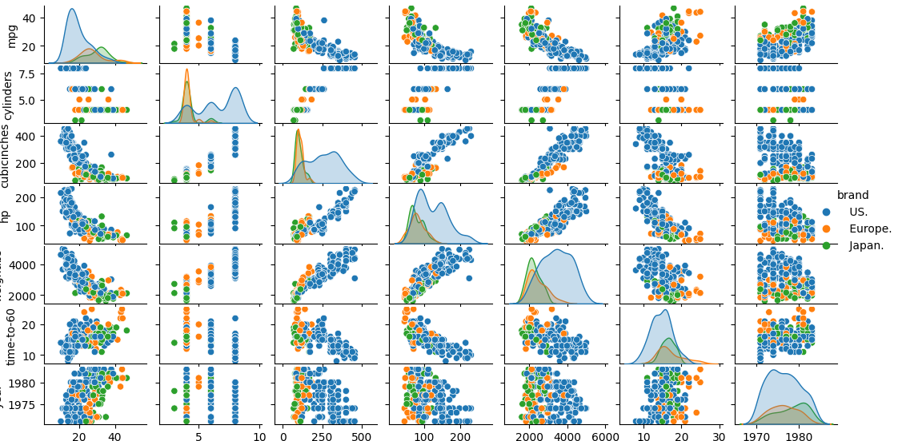

完整代码及数据集：https://github.com/JIANG54864/ml_exp/tree/main/exp4
【实验说明】
本实验通过汽车数据集cars.csv来实现对决策树进一步的了解。其中，汽车数据集包含3个品牌(即美国、欧洲、日本)的汽车的信息。该数据集的目标是使用诸如油耗、汽缸数、立方英寸、马力、重量、到60迈的时间、制造年份等特征找到汽车的品牌。
数据集内包含3类汽车数据，每条记录都有7项特征：油耗（mgp）、汽缸数（cylinders）、立方英寸（cubicinch）、马力（hp）、重量（weightlbs）、提速到60迈的时间（time-to-60）、制造年份（year），可以通过这7个特征预测汽车属于（US.， Europe.， Japan.）三个中的哪一品牌。
本实验将五分之四的数据集作为训练集对决策树模型进行训练；将剩余五分之一的数据集作为测试集，采用训练好的决策树模型对其进行预测。训练集与测试集的数据随机选取。本实验采用准确率(accuracy)作为模型的评估函数：预测结果正确的数量占样本总数。 决策树模型需要自己实现，不可使用已有的第三方库；
2.（选做）：另外，给出3个可视化预测结果。
【正文】
首先实现ID3算法，ID3算法只适用于离散值，因此先将数据离散化。先看一下数据的大致分布：
1 2 sb.pairplot(Data.dropna(), hue='brand' ) plt.show()

从对角线上观察每个特征的分布，第一个特征和最后一个特征勉强可以分为三个区间，其余特征只能分为两个区间，以此为依据进行分箱。
1 2 3 4 for col in ['mpg' , 'year' ]: Data[col] = pd.qcut(Data[col], q=3 , labels=[0 , 1 , 2 ]) for col in ['cylinders' , 'cubicinches' , 'hp' , 'weightlbs' , 'time-to-60' ]: Data[col] = pd.qcut(Data[col], q=2 , labels=[0 , 1 ])
对于决策树，最重要的就是划分选择。ID3算法通过信息熵、信息增益来划分。
信息熵（熵不纯度、信息量不纯度）定义如下：
$Ent(D)=-\sum\limits_{i=1}^np_ilogp_i$
如果所有模式的样本都来自同一类别，则不纯度为零，否则是大于零的正值，当所有类别以
1 2 3 4 for i in range (kinds.shape[0 ]): prior_probability = kinds[i] / total Entropy += (prior_probability * np.log2(prior_probability)) return -Entropy
假定离散属性a有V个可能的取值，若使用a来对样本集D进行划分，则会产生V个分支结点，其中第v个分支结点包含了D中所有在属性a上取值为$a^v$的样本，记为$D^v$，我们可计算出D的信息熵，再考虑到不同的分支结点所包含的样本数不同，给分支结点赋予权重$|D^v|/|D|$，即样本数越多的分支结点的影响越大，于是可计算出用属性a对样本集D进行
$Gain(D,a)=Ent(D)-\sum\limits_{v=1}^V\frac{|D^v|}{|D|}Ent(D)$
一般而言，信息增益越大，则意味着使用属性a来进行划分所获得的“纯度提升”越大。
1 2 3 4 5 6 7 8 def InfoGain (data: pd.DataFrame, label: str , forecast_label: str ) -> float : total_entropy = CulEntropy(data, forecast_label) gain = total_entropy sub_frame = data[[label, 'brand' ]] group = sub_frame.groupby(label) for key, df in group: gain -= (df.shape[0 ] / data.shape[0 ]) * CulEntropy(df, 'brand' ) return gain
递归创建决策树：如果当前分支下的实例只有一种分类，则返回该分类。遍历所有特征，选择信息增益最大的特征作为当前节点的划分特征（如果所有特征的信息增益都为0，则返回数据集中数量最多的类别）。注意最佳特征可能有多个，对每个取值，筛选出 data 中 bestFeature 等于 value 的子数据集。递归地为该子数据集构建子树。
1 2 3 4 5 6 7 8 9 10 11 12 13 14 15 16 17 18 19 def createmyID3Tree (data: pd.DataFrame ) -> dict : if len (data['brand' ].value_counts()) == 1 : return data['brand' ].iloc[0 ] bestGain = 0 bestFeature = -1 for column in data: if column != 'brand' : gain = InfoGain(data, column, 'brand' ) if bestGain < gain: bestGain = gain bestFeature = column if bestFeature == -1 : valueCount = data['brand' ].value_counts() return valueCount.index[0 ] myTree = {bestFeature: {}} valueList = set (data[bestFeature]) for value in valueList: myTree[bestFeature][value] = createmyID3Tree(data[data[bestFeature] == value]) return myTree
至此，我们就可以使用训练好的决策树进行预测了，如果子树是分支节点，则递归预测，如果子树是叶节点，则直接返回类别。
1 2 3 4 5 6 7 8 9 10 11 def decision (tree: dict , testVector: pd.Series ): forecastLabel = 0 firstFeature = next (iter (tree)) childTree = tree[firstFeature] for key in childTree.keys(): if testVector[firstFeature] == key: if type (childTree[key]) == dict : forecastLabel = decision(childTree[key], testVector) else : forecastLabel = childTree[key] return forecastLabel
前文提到了ID3算法用的信息增益，此外著名的决策树算法还有C4.5、CART，这两种算法并不需要对数据进行离散化。信息增益准则对可取值数目较多的属性有所偏好，为减少这种偏好可能带来的不利影响，C4.5算法不直接使用信息增益，而是使用“增益率”(gain ratio )来选择最优划分属性
$Gain_ratio=\frac{Gain(D,a)}{IV(a)}$
1 2 3 4 5 6 def GainRatio (data: pd.DataFrame, label: str , forecast_label: str ) -> float : info_gain = InfoGain(data, label, forecast_label) intrinsic_info = CulIntrinsicInfo(data, label) if intrinsic_info == 0 : return 0 return info_gain / intrinsic_info
其中$IV(a)=-\sum\limits_{v=1}^V\frac{|D^v|}{|D|}log_2\frac{|D^v|}{|D|}$称为属性a的 “固有值” (intrinsic value)。
1 2 3 4 5 6 7 8 9 def CulIntrinsicInfo (data: pd.DataFrame, label: str ) -> float : total = data.shape[0 ] kinds = data[label].value_counts() intrinsic_info = 0.0 for count in kinds: prior_probability = count / total safe_prob = np.where(prior_probability == 0 , 1 , prior_probability) intrinsic_info -= prior_probability * np.log2(safe_prob) return intrinsic_info
属性a的可能取值数目越多(即V 越大)，则 IV (a)的值通常会越大。
增益率准则对可取值数目较少的属性有所偏好，因 此 C4.5算法并不是直接选择增益率最大的候选划分属性，而是先从候选划分属性中找出信息增益高于平均水平的属性，再从中选择增益率最高的。
1 2 3 4 5 6 7 8 9 10 11 12 13 14 15 16 17 18 19 20 21 22 23 24 25 26 27 28 29 30 31 info_gains = {} for column in data.columns: if column != 'brand' : info_gains[column] = InfoGain(data, column, 'brand' ) avg_info_gain = np.mean(list (info_gains.values())) candidate_features = [feature for feature, gain in info_gains.items() if gain > avg_info_gain] if not candidate_features: valueCount = data['brand' ].value_counts() return valueCount.index[0 ] bestGainRatio = 0 bestFeature = None for feature in candidate_features: gain_ratio = GainRatio(data, feature, 'brand' ) if gain_ratio > bestGainRatio: bestGainRatio = gain_ratio bestFeature = feature if bestFeature is None : valueCount = data['brand' ].value_counts() return valueCount.index[0 ]
CART决策树选择使得划分后基尼指数最小的属性作为最优划分属性。
数据集的纯度可用基尼值来度量：{k=1}^n\sum\limits {k^{‘}\neq{k}}pkp {k^{‘}}=1-\sum\limits_{k=1}^n{p_k}^2$
1 2 3 4 5 6 7 8 def CulGini (data: pd.DataFrame, forecast_label: str ) -> float : total = data.shape[0 ] kinds = data[forecast_label].value_counts() gini = 1.0 for i in range (kinds.shape[0 ]): prior_probability = kinds[i] / total gini -= prior_probability ** 2 return gini
直观来说，Gini(D)反映了从数据集D中随机抽取两个样本，其类别标记不一致的概率。因此Gini(D)越小，则数据集D的纯度越高。属性a 的基尼指数定义为
$Gini_index(D,a)=\sum\limits_{v=1}^V\frac{|D^v|}{|D|}Gini(D^v)$
1 2 3 4 5 6 7 def GiniIndex (data: pd.DataFrame, label: str , forecast_label: str ) -> float : gain = 0 sub_frame = data[[label, forecast_label]] group = sub_frame.groupby(label) for key, df in group: gain += (df.shape[0 ] / data.shape[0 ]) * CulGini(df, forecast_label) return gain
CART算法构建的决策树是二叉树，与前两个算法的多叉树不同。
1 2 3 4 5 6 7 8 9 10 11 12 13 14 15 16 17 18 19 min_gini = float ('inf' ) best_feature = None for feature in data.columns.drop(label): current_gini = GiniIndex(data, label, feature) if current_gini < min_gini: min_gini = current_gini best_feature = feature if best_feature is None : return {'class' : data[label].mode()[0 ]} best_threshold = find_best_split(data, best_feature, label) left_data = data[data[best_feature] <= best_threshold].drop(columns=[best_feature]) right_data = data[data[best_feature] > best_threshold].drop(columns=[best_feature]) return { best_feature: { 'threshold' : best_threshold, 'left' : createmyCartTree(left_data, label, depth - 1 ), 'right' : createmyCartTree(right_data, label, depth - 1 ) }
在划分时，寻找一个最佳阈值进行二分：
1 2 3 4 5 6 7 8 9 10 11 12 13 14 15 values = sorted (data[feature].unique()) best_gini = float ('inf' ) best_threshold = values[0 ] for i in range (1 , len (values)): threshold = (values[i-1 ] + values[i]) / 2 left = data[data[feature] <= threshold] right = data[data[feature] > threshold] if len (left) == 0 or len (right) == 0 : continue total = len (left) + len (right) gini = (len (left)/total)*CulGini(left, label) + (len (right)/total)*CulGini(right, label) if gini < best_gini: best_gini = gini best_threshold = threshold
由于CART容易过拟合，故还加上了预剪枝操作
1 2 3 4 5 6 7 if len (data) < min_samples or max_depth <= 1 : return True if CulGini(data, label) < 0.1 : return True return False
总的来说，三种算法的准确度差距不是特别大。
参考文献：
[1] 周志华 著. 机器学习[M]. 北京: 清华大学出版社, 2016.
[2] Richard O. Duda, Peter E. Hart, David G. Stork 著；李宏东，等 译. 模式分类（原书第2版）[M]. 北京: 机械工业出版社, 2003.